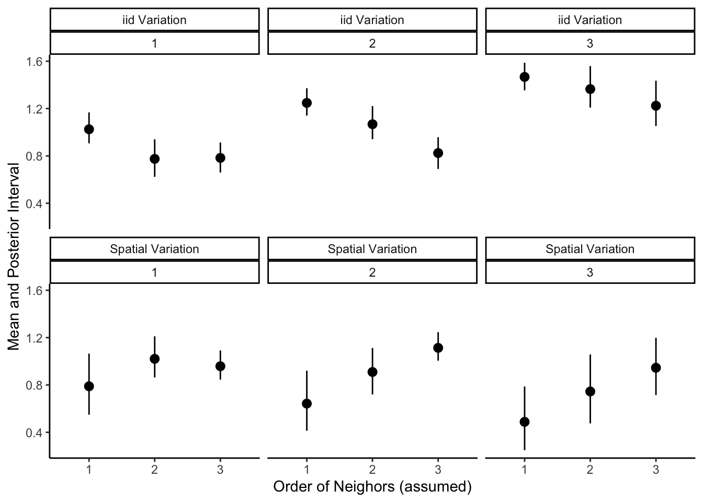

On the Adjacency Matrix in ICAR and Convolution Prior Models
spatial
simulation
r
base
Author
Duncan J. Mayer
Published
January 10, 2023
This post explores the role of the adjacency matrix in determining spatial variation in the Intrinsic Conditional Auto-regressive (ICAR) and convolution prior models.
Introduction
Areal data, which consists of a finite set of bounded regions, in which measurements aggregated from each region’s population, are commonly encountered in many areas. For example, in US based research it is common to investigate occurrences of a phenomenon using administrative units such as counties, census tracts, or zip codes. When considering such spatial units, geographic scale becomes a key concern. Geographic scale consists of grain and extent, where grain refers to the resolution of sampling units,and extent refers to the total area under consideration (Simon, 1962). In many applications spatial heterogeneity is a looming threat and depends on scale, for example, working with large extent and coarse grain may mask spatial heterogeneity, only to see it emerge at finer grain, and patterns in ecological data can be confounded by trends at intermediate scales and noise at the smallest scales. Spatial methods provide a way of disentangling artifacts of geographic scale and patterns. The convolution prior (described below) is a widely used model that captures spatial and non-spatial heterogeneity, allowing a comparison of sources of variation, and more accurate estimation of focal effects.
This post first discusses the convolution prior, then using a series of simulations the post shows the ratio of spatial to non-spatial heterogeneity is primarily a function of the adjacency matrix, a feature that is not often discussed in applied work. Additionally, the simulations show standard approaches, such as model comparison, are not helpful in recovering the underlying neighborhood structure.
The ICAR Prior
The ICAR prior model was first introduced by Besag (1974) as a special case of the CAR prior, namely, when the model assumes complete spatial heterogeneity. Given a graph of neighbors which defines the pairs of regions which interact, the conditional distribution of the individual random variables defines a Gaussian Markov Random Field, while the joint distribution is multivariate normal with mean zero (Besag, 1974). The ICAR prior model can be written as
where \(\phi_i\) defines the spatial effect for neighborhood \(i\), and \([i]\) indexes the neighbors of neighborhood \(i\), \(d_i\) is the number of neighbors for neighborhood \(i\), and \(\sigma^2_\phi\) is the common variance.1
The Adjacency Matrix
The precision matrix for the multivariate normal that defines the joint distribution of the spatial effects is derived from a diagonal matrix and an adjacency matrix, both are \(n\) by \(n\) matrices, where the diagonal matrix contains the number of neighbors corresponding to neighborhood \(i\) in entry \(n_{ii}\) while the adjacency matrix is often binary, containing a “1” in entry \(n_{ij}\) if neighborhoods \(i\) and \(j\) are neighbors, and “0” otherwise2.
Clearly, the specification of the adjacency matrix has implications for the estimates of \(\phi_i\). In the equation for the ICAR shown above, it is clear that the total number of neighbors can change the estimates: the specification of neighbors in the sum change the estimates for the mean, as it is calculated conditional on the neighbors. It is likely that a high number of neighbors increases the spatial effects to the extent that they outpace the increase in the denominator. Further, the variance decreases as a function of the number of neighbors defined in the adjacency matrix.
The Convolution Prior Model
The ICAR prior assumes complete spatial autocorrelation, which can be viewed as a is a strong prior on the source of variation when included in isolation: fixing non-spatial variation at zero. The convolution prior (Besag, York, and Mollié, 1991) relaxes this assumption by including a spatially structured effect (ICAR) and an unstructured random effect that varies over the spatial units. Commonly, this comes in the form of the Besag-York-Mollié (BYM) model, which places the two random effects in the context of a log-Poisson model, often with an exposure term. With covariates outcome \(Y_i\) for spatial units \(i\), covariates \(X\) and offset \(p_i\), the BYM can be written as
The convolution prior model often requires sensible priors, estimating two random effects when one measurement is taken from each spatial unit the posteriors may be sensitive to the selection of priors in the full Bayesian context. Additionally, sensible priors (or “fair”, in the sense that they equally weight spatial and non-spatial variation) are difficult to generate as the ICAR is specified conditionally while the unstructured effect is specified marginally3. However, it is often tempting to compare the sources of variation, declaring a percent of the variation in the outcome due to spatially structured variation, or non-spatially structured variation. For example, one may compute \(\sigma^2_\phi / (\sigma^2_\phi + \sigma^2_\delta)\). Yet, as described above, the posterior of the variance may depend heavily on the specification of the adjacency matrix, an issue under-researched in the literature. Accordingly, this post explores the sensitivity of the posterior estimates to the specification of the adjacency matrix, as well as the ability of the model to recover the correct neighborhood structure.
Simulation Study
Defining Adjacency Matrices
To simulate the convolution prior, I first must specify a neighborhood graph. For the purpose of this post, I’m going to use Cuyahoga County Ohio’s Census Tracts, with 2010 geographic boundaries. I will generate a total of 6 adjacency matrices to show how rapidly the number of neighbors increase, although in the eventual in the simulation study, I will focus on “queen” contiguity as it is the most commonly used, and entertaining all patterns would be much too long for a post, although the idea holds for other patterns.
I define all adjacency matrices to be binary, varying the order of neighbors from 1-3. Below, I’ve written a function to help create the various adjacency matrices that will be used in this study.
Code
library('ggplot2')library('INLA')set.seed(101) # reproducibilityca <- tigris::tracts(state ="OH", county ="Cuyahoga", year =2010)# remove water ca <- ca[ca$TRACTCE10 !=990000,]ca$areaid <- ca$TRACTCE10# helper function for weight matrix create_neighborhood_matrix <-function(geo, geo_names, queen =TRUE, style ="B", order =1) {if (class(geo)[1] !="sfc_MULTIPOLYGON") {stop("geo must be of class sfc_MULTIPOLYGON")} w <- spdep::poly2nb(geo, row.names = geo_names, queen = queen)if (class(w) !="nb") {stop("w must be of class nb")}if (order <1| order >3) {stop("order of neighbors must be 1, 2, or 3")}if (order ==1) {mat <- spdep::nb2mat(w, style = style)}if (order %in%c(2, 3)) { wl <- spdep::nblag(w, maxlag = order) wl <- spdep::nblag_cumul(wl) mat <- spdep::nb2mat(wl, style = style) }return(mat)}
As I define the neighbors to be of higher order, the average number of neighbors increases dramatically, for example, the average number of neighbors for each unit increases from 6 to 41 using queen contiguity, and from 5 to 36 for rook contiguity, as we vary the order of neighbors from 1 to 3.
In the code below, for a given adjacency matrix, I create a function with simulates data consistent with the neighbor graph following the process of a convolution prior on the log scale, with 3 covariates sampled from a multivariate normal and an offset sampled from a uniform distribution. In the code below, the spatial effect is generated using SUMMER and labeled sp while the unstructured variation is unstruc. There are two features worth noting here. First, the random effects are uncorrelated with the covariates, a simplifying assumption of the BYM model. Second, the unstructured variation is sampling from a normal distribution with standard deviation defined as equal to the standard deviation of the spatially structured variation. This ensures they are equal, on average, when the data are simulated.
Code
simulate_bym_df <-function(neighborhoodmat, n =dim(neighborhoodmat)[1], bx =c(.08,-.03,-.04),mu =c(1, 1, 2), sigma =matrix(data =c(1.11, 0.30, -0.15, 0.30, 0.84, 0.25, -0.15, 0.25, 2.00), nrow =3)) {# create data dft <- MASS::mvrnorm(n, mu = mu, Sigma = sigma) sp <-as.vector(SUMMER::rst(n=1, n.t =1, type ="s", Amat = neighborhoodmat, scale.model =TRUE)) # spatial random effect, ICAR offset_pop <-round(runif(n, min =100, max =1000), 0) # population size unstruc <-rnorm(n, 0, sd(sp)) # simulate normal, unstructured random effect with standard deviation equal to spatial variation mu_p <-exp(0+1*log(offset_pop) + dft %*% bx + sp + unstruc) # generate mean function yy <-as.vector(rpois(n, lambda = mu_p)) # poisson dft <-as.data.frame(cbind(dft, yy, sp, unstruc, offset_pop, mu_p)) # package data dft$areaid <-row.names(neighborhoodmat) # create idsreturn(dft)}
With functions to create a neighborhood structure of our choice and generate data following the convolution prior with ecological covariates, all that’s left to do before fitting the models is create the data.
Code
# create data dfqlist <-list()sdq <-list()for ( i in1:3) {# underlying structure of spatial correlation is queen with order 1-3dfqlist[[i]] <-simulate_bym_df(neighborhoodmat =create_neighborhood_matrix(geo = ca$geometry, geo_names = ca$TRACTCE10, order = i))}dflist <- dfqlist#
Results
In the code below I fit models model with the convolution prior using 3 data sets, each 3 times, varying only the specification of the adjacency matrix4. I use Integrated Nested Laplace Approximation (INLA) with the vague priors that inla has as default (diffuse log-gamma for spatial and non-spatial variance). INLA uses optimization rather than sampling, and while I typically prefer the full Bayesian methodology, INLA is often very efficient for latent Gaussian models and I’m fitting several of them here.
Having fit the 9 models, I then extract the hyper-parameters transformed (which are transformed into standard deviation) and show the results in the figure below. The top row of the figure shows a summary of the posterior for the standard deviation for the standard deviation of the non-spatial effect, while the second row shows the standard deviation of the spatial variation. The number underneath the label for the source of variation indicates the order of neighbors used to simulate the ICAR.
There are several notable features of the posterior summaries. As I suggested when inspecting the model in the first section, in all cases the posterior interval of the spatial variation decreases as the order of neighbors, and the average number of neighbors, increases. Additionally, at least when the true order of neighbors is above 1, the standard deviation of the spatial effect increases linearly with the order of neighbors assumed in the construction of the adjacency matrix. When the true order is 1, however, the standard deviation increases when the order jumps for 1 to 2, but not from 2 to 3. As the two random effects in the BYM model compete for variation, the non-spatial standard deviation decreases as a function of the number of neighbors. In this sense, the simulation shows that the percent of variance that is spatially structured is largely an artifact of the adjacency matrix.
Code
fitf <-function(neigh, df) {# INLA FORMULAform <- yy ~1+ V1 + V2 + V3 +f(areaid, model ="bym", graph = neigh, values =row.names(neigh), scale.model =TRUE) m <-inla(formula = form,family="poisson", offset =log(offset_pop),data=df,control.family=list(link='log'),control.predictor=list(link=1, compute=TRUE),control.compute=list(dic=TRUE, cpo=TRUE, waic=TRUE))mout <-as.data.frame(brinla::bri.hyperpar.summary(m))mout$empircal_sdsp <-sd(df$sp)mout$empircal_sdun <-sd(df$unstruc)mout$waic <- m$waic$waicreturn(mout)}# index book keeping to avoid nested looptr <-expand.grid(1:3, 1:3)modlist <-list()for (i in1:length(tr$Var1) ) {modlist[[i]] <-fitf(nlist[[tr$Var1[[i]]]], dflist[[tr$Var2[[i]]]])}names(tr) <-c("neigh", "df")hyper_results <-do.call(rbind.data.frame, modlist)# label componenetshyper_results$com <-rep(c("iid Variation","Spatial Variation"))# combine results hyper_results <-rbind(cbind(hyper_results[hyper_results$com =="iid Variation",], tr), cbind(hyper_results[hyper_results$com =="Spatial Variation",], tr))hyper_results$neigh <-as.factor(hyper_results$neigh )# plot hyper-parameters over adjacnecy specificationsggplot(hyper_results, aes(y = mean, x = neigh, ymin = q0.025, ymax = q0.975)) +geom_pointrange() +labs(y ="Mean and Posterior Interval", x ="Order of Neighors (assumed)") +facet_wrap(. ~ com + df, scales ="fixed") +theme_classic()

Does Model Comparison Help?
The discussion and simulation shown above suggests the results depend heavily on the choice of neighbor order when creating an adjacency matrix. So, now I consider if the adjacency matrix can be recovered through model comparison. Here, I use the Watanabe–Akaike information criterion (WAIC), which is a measure of prediction error that does not require the true distribution, and is often preferred in the Bayesian setting as it integrates over the full posterior in contrast to, for example, DIC, which relies on the posterior mean (Gelman et al., 2014). If one is further willing to assume that the true model is among the candidates considers (i.e. M-closed), which is verifiable the data are simulated, relative WAIC can be used create weights that sum to 1 and yield the probability that the model is correct (Wagenmakers & Farrell, 2004).
In the code below I generate weights for the 3 models considered under each data set. The table shows the order of neighbors assumed in the adjacency matrix used in the model, the order of neighbors used when simulating the data (“true”), the WAIC, and the weight. A correct model is one where the orders agree.
Clearly, model comparison is not helpful in this situation. The weights are comparable across models, as predictive performance is largely unable to discern between adjacency matrices. However, assuming third order neighbors achieves the “best” predictive performance in all situations, despite being incorrect in two occasions. These results suggest the true order of neighbors can not be recovered by conventional model comparison.
In this post I have described the ICAR and convolution prior models, as well as the BYM model which places them in the setting of a log-poisson. I’ve focused on the role of the adjacency matrix in the ICAR component and suggested it is important in determining the posterior of the ICAR’s variance. Using simulation, I showed that varying only the order of neighbors in the adjacency matrix changes the estimates of the posterior, as well as the corresponding unstructured effect. Finally, I showed that model comparison is not helpful in recovering the true order of neighbors.
References
Banerjee, S., Carlin, B. P., & Gelfand, A. E. (2003). Hierarchical Modeling and Analysis for Spatial Data (1st edition). Chapman and Hall/CRC.
Besag, J. 1974. “Spatial Interaction and the Statistical Analysis of Lat-
tice Systems.” Journal of the Royal Statistical Society. Series B (Methodological).
JSTOR, 192–236.
Besag, J, J York, and A Mollié. 1991. “Bayesian Image Restoration with
Two Applications in Spatial Statistics.” Ann Inst Stat Math 43: 1–59. (https:
//doi.org/10.1007).
Earnest, A., Morgan, G., Mengersen, K., Ryan, L., Summerhayes, R., & Beard, J. (2007). Evaluating the effect of neighbourhood weight matrices on smoothing properties of Conditional Autoregressive (CAR) models. International Journal of Health Geographics, 6(1), 54. https://doi.org/10.1186/1476-072X-6-54
Gelman, A., Hwang, J., & Vehtari, A. (2014). Understanding predictive information criteria for Bayesian models. Statistics and Computing, 24(6), 997–1016. https://doi.org/10.1007/s11222-013-9416-2
Riebler, A., Sørbye, S. H., Simpson, D., & Rue, H. (2016). An intuitive Bayesian spatial model for disease mapping that accounts for scaling. Statistical Methods in Medical Research, 25(4), 1145–1165. https://doi.org/10.1177/0962280216660421
Simon, H., A. 1962. The architecture of complexity. Proceedings of the American Philosophical Society106:467-482
Wagenmakers, E.-J., & Farrell, S. (2004). AIC model selection using Akaike weights. Psychonomic Bulletin & Review, 11(1), 192–196. https://doi.org/10.3758/BF03206482
Footnotes
Following recent convention, this post defines things in terms of standard deviation and variance, rather than precision as is found in many of the older references (e.g., Besag, 1974).↩︎
Given the diagonal matrix \(D\) and the adjacency matrix \(A\), the precision matrix \(Q\) is found by \(Q = D(I - \alpha A)\), where \(\alpha\) is set to 1 in the ICAR. This post entertains binary adjacency matrices, although the broader literature often includes other forms, such as row or global standardization, or measures of similarity (see, for example, Earnest et al., 2007). These are simple to implement, however, the applied literature often focuses on the binary specification.↩︎
Taking this issues seriously is challenging (see Banerjee et al., 2003). Recent advances in the Complexity Penalizing framework have resulting in clever reparameterizations, see (Riebler et al., 2016).↩︎
I know nested loops have fallen out of favor, and this isn’t the most elegant solution to getting around them, but as J.D. Long says, “I’d have written a shorter solution but I didn’t have the time”↩︎